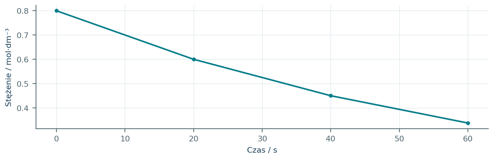
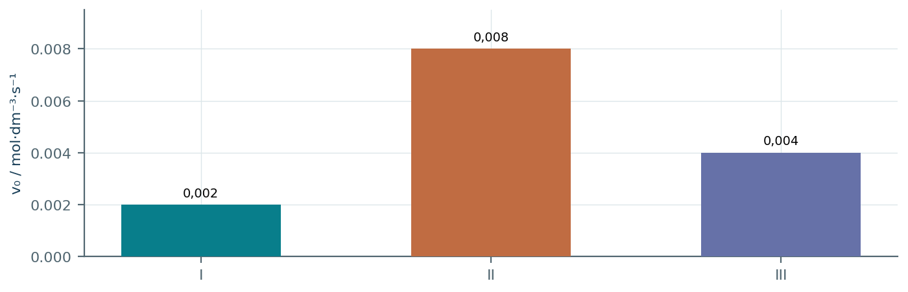
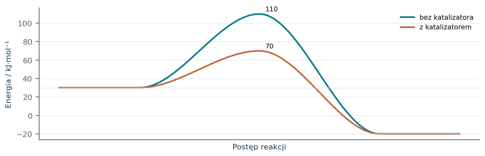
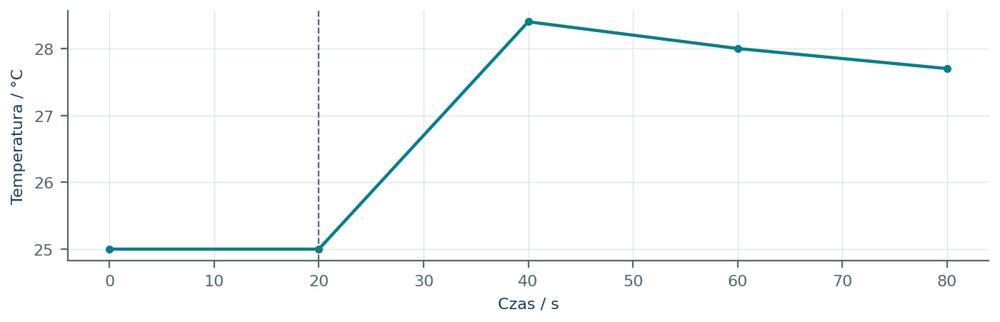
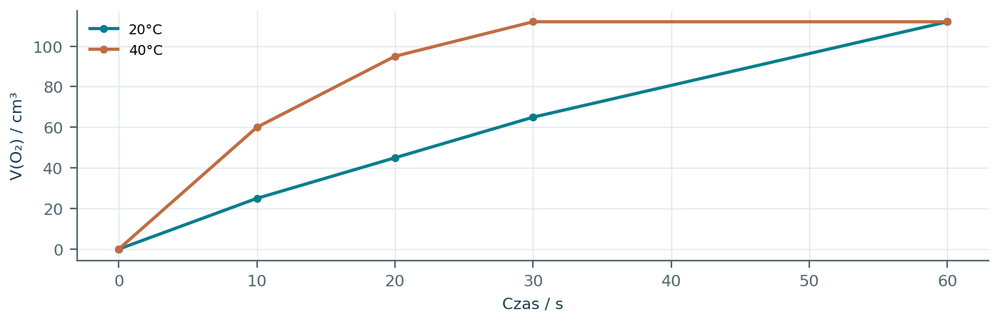
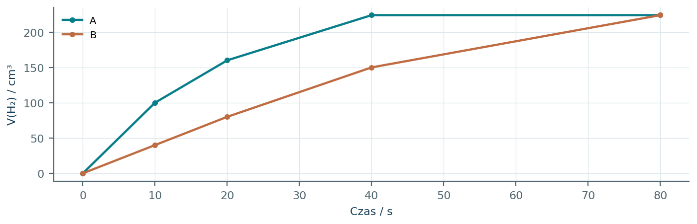
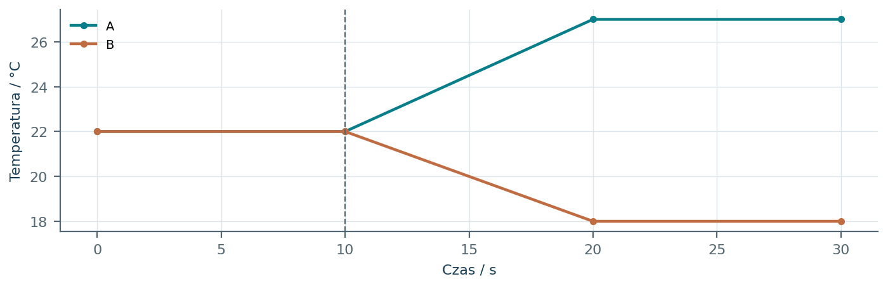
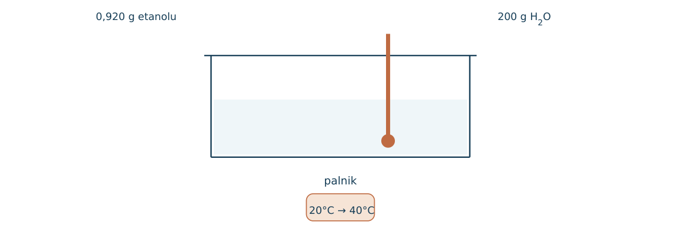
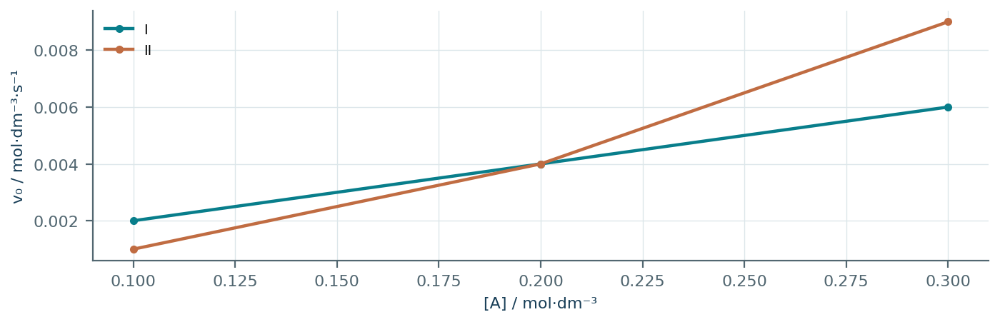
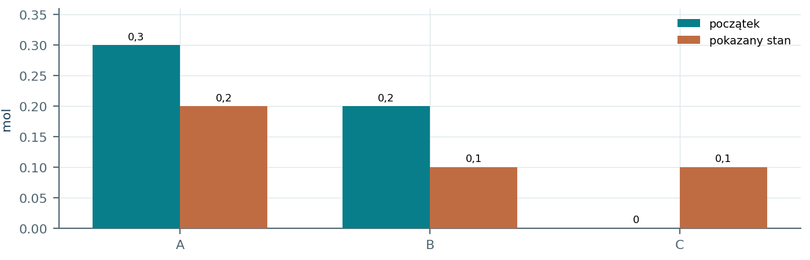

05.01 · 1 pkt
Podczas rozpuszczania substancji roztwór ochładza się. Określ znak entalpii procesu i kierunek przepływu ciepła.
Rozwiązanie
- Delta H > 0; proces pobiera ciepło z otoczenia.
50 zadań · 111 pkt · odpowiedzi rozwijane po samodzielnej próbie
← KatalogZadania PDFRozwiązania PDFDane do obliczeń: H 1; C 12; N 14; O 16; Na 23; Mg 24; Al 27; P 31; S 32; Cl 35,5; K 39; Ca 40; Cr 52; Mn 55; Fe 56; Cu 64; Zn 65; Ag 108; Br 80; I 127; Ba 137 (g/mol). NA = 6,02·1023 mol-1. Vm = 22,4 dm3/mol w warunkach normalnych (0°C, 1013 hPa). W 25°C Kw = 10-14. Dane podane w zadaniu mają pierwszeństwo.
Podczas rozpuszczania substancji roztwór ochładza się. Określ znak entalpii procesu i kierunek przepływu ciepła.
Oceń zdania A i B, wpisując P albo F. Każde zdanie fałszywe popraw lub krótko uzasadnij. A: Katalizator może obniżyć energię aktywacji. B: Egzotermiczność gwarantuje dużą szybkość reakcji w temperaturze pokojowej.
Spalenie 0,25 mola metanu wydzieliło 222,5 kJ. Oblicz molową entalpię spalania.
Dla 2H2 + O2 → 2H2O(l) ΔH = -572 kJ. Ile ciepła wydzieli powstanie 9,0 g wody?
Czy katalizator zmienia znak ΔH reakcji? Uzasadnij.
Energia substratów to 40 kJ, produktów 10 kJ, a maksimum profilu 100 kJ. Wyznacz ΔH i energię aktywacji reakcji w przód.
Dla profilu: substraty 20 kJ, produkty 70 kJ, maksimum 110 kJ, oblicz energie aktywacji w obu kierunkach.
Narysuj na jednym schemacie profil reakcji egzotermicznej bez katalizatora i z katalizatorem.
Wyjaśnij, dlaczego podniesienie temperatury zazwyczaj przyspiesza reakcję.
Dlaczego sproszkowany CaCO3 reaguje z HCl szybciej niż grudka o tej samej masie?
Zaprojektuj porównanie wpływu rozdrobnienia CaCO3 na szybkość reakcji z HCl. Podaj wielkości stałe i mierzoną.
Uczeń porównuje dwa doświadczenia różniące się stężeniem kwasu i temperaturą. Czy może przypisać zmianę szybkości tylko stężeniu?
Stężenie A zmalało z 0,80 do 0,50 mol/dm3 w 60 s. Oblicz średnią szybkość zaniku A.
W reakcji 2A → B stężenie A maleje ze średnią szybkością 0,040 mol/(dm3·s). Oblicz szybkość powstawania B.
Czy wykres stężenia substratu względem czasu musi być linią prostą? Uzasadnij.
Wykres ilości produktu ma coraz mniejsze nachylenie. Co można powiedzieć o szybkości jego powstawania?
Dane: [A] 0,10 i 0,20 mol/dm3, przy stałym [B]; szybkości 0,020 i 0,080 mol/(dm3·s). Ustal rząd względem A.
Dane: przy stałym [A] podwojenie [B] nie zmienia szybkości. Określ rząd względem B i wpływ potrojenia [B].
Dane ([A],[B],v): (0,10;0,10;0,002), (0,20;0,10;0,004), (0,10;0,20;0,008), w jednostkach mol/dm3 i s. Ustal równanie kinetyczne.
Dla v=k[A][B]2 i v=0,002 mol/(dm3·s), [A]=[B]=0,10 mol/dm3 oblicz k i jego jednostkę.
Dla v=k[A]2[B] jednocześnie podwojono [A] i zmniejszono [B] o połowę. Oblicz stosunek szybkości końcowej do początkowej.
Czy współczynniki równania sumarycznego wystarczają do wyznaczenia rzędów reakcji złożonej?
Dla reakcji pierwszego rzędu v=k[A], k=0,020 s-1, [A]=0,30 mol/dm3. Oblicz v.
Przyjmij model, w którym wzrost T o 10°C podwaja szybkość. Ile razy wzrośnie szybkość po ogrzaniu z 20 do 50°C?
Na czym polega kataliza heterogeniczna? Podaj przykład układu faz.
Dlaczego katalizator nie jest zużywany w sumarycznym równaniu reakcji, choć może brać udział w etapach mechanizmu?
H2O2 rozkłada się z wydzieleniem gazu. Jak wykazać katalityczne działanie MnO2 i jaki gaz powstaje?
Czy reakcja egzotermiczna musi przebiegać szybko w temperaturze pokojowej? Uzasadnij.
Kalorymetr z 200 g wody ogrzał się o 5,0 K. Przyjmij q=mc ΔT, c=4,18 J/(g·K), pomiń pojemność naczynia i straty. Oblicz ciepło przejęte przez wodę.
0,050 mola substancji w reakcji ogrzało 100 g roztworu o 6,0 K. Przyjmij c=4,18 J/(g·K), pomiń straty. Oblicz molową entalpię.
Dane: C+O2→CO2, ΔH=-394 kJ; CO+(1/2)O2→CO2, ΔH=-283 kJ. Korzystając z addytywności entalpii, oblicz ΔH dla C+(1/2)O2→CO.
Dane energie wiązań [kJ/mol]: H-H 436, Cl-Cl 243, H-Cl 431. Z modelu ΔH=sum(E zrywanych)-sum(E tworzonych) oszacuj entalpię H2+Cl2→2HCl.
Wyjaśnij, dlaczego samo zrywanie wiązań wymaga energii, mimo że cała reakcja może być egzotermiczna.
Jak odróżnisz efekt cieplny rozcieńczania kwasu od ciepła jego zobojętniania w doświadczeniu kalorymetrycznym?
Dwa katalizatory dają Ea=45 i 60 kJ/mol dla tej samej reakcji. Czy z tych danych wynika różna entalpia reakcji?
Dla reakcji gazowej v=k[A]2 objętość zmniejszono dwukrotnie w stałej temperaturze. Oszacuj chwilową zmianę szybkości.
Zebrano CO2 [cm3] po 0, 20, 40, 60 s: 0, 30, 50, 60. Oblicz średnią szybkość wydzielania gazu w pierwszych i ostatnich 20 s.
Dlaczego należy sprawdzić szczelność aparatury przed badaniem szybkości przez pomiar objętości gazu?
W modelu v=k[A], początkowo [A]=0,40 mol/dm3 i v=0,0080 mol/(dm3·s). Po czasie [A]=0,10 mol/dm3. Oblicz nową szybkość przy tej samej T.
Dla reakcji A+B→P zmierzono ([A],[B],v): (0,10;0,10;0,0020), (0,20;0,10;0,0080), (0,10;0,20;0,0040). Jednostki: mol/dm3 i s. a) Wyznacz rzędy i równanie kinetyczne. b) Oblicz k z jednostką. c) Przewidź zmianę v po zmniejszeniu objętości dwukrotnie. d) Narysuj profil reakcji o ΔH=-30 kJ/mol i Ea=60 kJ/mol.
Każdy numer 41-50 oznacza jedno zadanie główne; podpunkty są oceniane osobno.
Wykres przedstawia stężenie A podczas reakcji w stałej temperaturze. Zaproponowano model v=k[A]. Dla tego modelu k=ln(c0/c)/t; symbol ln oznacza logarytm naturalny. Czas odczytuj w sekundach.

05.41.1 (2 pkt) Oblicz średnie szybkości zaniku A w przedziałach 0-20 s i 40-60 s.
05.41.2 (1 pkt) Z pierwszego przedziału oblicz k i jego jednostkę.
05.41.3 (1 pkt) Czy spadek szybkości oznacza zmniejszenie k? Uzasadnij przy stałej T.
0,0100 oraz 0,005625 mol/(dm3·s).
k=ln(0,8/0,6)/20≈0,01438 s-1.
Nie; k modelu pozostaje stałe, zmniejsza się [A], więc maleje v=k[A].
Dla reakcji A+B→P przeprowadzono doświadczenia I-III. Stężenia początkowe ([A],[B]) w mol/dm3 wynosiły: I (0,10;0,10), II (0,20;0,10), III (0,10;0,20). Wykres pokazuje początkowe szybkości.

05.42.1 (2 pkt) Ustal rzędy względem A i B oraz zapisz równanie kinetyczne.
05.42.2 (2 pkt) Oblicz k wraz z jednostką.
05.42.3 (1 pkt) Oblicz szybkość po równoczesnym podwojeniu obu stężeń z doświadczenia I.
A: 2, B: 1; v=k[A]2[B].
k=0,002/(0,102·0,10)=2,0 dm6/(mol 2·s).
Wzrost 22·2=8 razy, v=0,016 mol/(dm3·s).
Na profilu energetycznym pokazano drogę bez katalizatora i z katalizatorem. Energie substratów i produktów odnoszą się do tej samej umownej skali. Porównaj barierę w obu kierunkach, nie tylko wysokość maksimum.

05.43.1 (2 pkt) Wyznacz ΔH reakcji i Ea w przód bez katalizatora.
05.43.2 (1 pkt) Oblicz Ea reakcji odwrotnej z katalizatorem.
05.43.3 (1 pkt) Czy katalizator zmieni stałą równowagi tej reakcji w tej samej T? Uzasadnij.
Delta H=-20-30=-50 kJ/mol; Ea=110-30=80 kJ/mol.
Ea=70-(-20)=90 kJ/mol.
Nie; zmienia drogę i szybkość dojścia do równowagi, nie różnicę energii reagentów ani K.
Zmieszano po 50,0 cm3 HCl i NaOH, oba 0,500 mol/dm3, o temperaturze 25,0°C. Wykres pokazuje temperaturę mieszaniny. Przyjmij masę 100 g, c=4,18 J/(g·K), brak strat do chwili maksimum i pomiń pojemność naczynia.

05.44.1 (2 pkt) Oblicz ciepło przejęte przez roztwór.
05.44.2 (2 pkt) Oblicz molową entalpię zobojętniania przypadającą na mol powstałej wody.
05.44.3 (1 pkt) Wyjaśnij kierunek błędu, gdy część ciepła uciekła przed maksimum.
q=100·4,18·(28,4-25,0)=1421,2 J.
n(H2O)=0,0250 mol; ΔH≈-56,8 kJ/mol.
Zmierzona ΔT byłaby za mała; obliczona entalpia za mało ujemna, a wartość bezwzględna zaniżona.
Rozkładano po 100 cm3 roztworu H2O2 0,100 mol/dm3, w 20°C i 40°C. Wykresy odnoszą objętości O 2 do tych samych warunków normalnych. W obu próbach H2O2 rozłożył się całkowicie.

05.45.1 (2 pkt) Oblicz średnie szybkości wydzielania gazu w pierwszych 10 s i porównaj je.
05.45.2 (1 pkt) Sprawdź końcową objętość O 2 na podstawie stechiometrii.
05.45.3 (1 pkt) Dlaczego szybsza reakcja nie dała większej ilości końcowej produktu?
20°C: 2,5 cm3/s; 40°C: 6,0 cm3/s, czyli 2,4 razy większa.
n(H2O2)=0,0100 mol, n(O 2)=0,00500 mol; V=112 cm3.
Końcową ilość określa jednakowa ilość substratu i pełna przemiana, nie szybkość jej osiągnięcia.
Dwie próbki Mg po 0,240 g reagowały z identycznym nadmiarem HCl. Jedna była proszkiem, druga wstążką. Wszystkie objętości suchego H2 przeliczono na warunki normalne, a pozostałe warunki doświadczenia były jednakowe.

05.46.1 (2 pkt) Przypisz postać Mg do krzywych i uzasadnij.
05.46.2 (1 pkt) Sprawdź teoretyczną objętość końcową gazu.
05.46.3 (1 pkt) Wymień dwie zmienne kontrolowane niezbędne do wniosku o wpływie rozdrobnienia.
A=proszek, B=wstążka; większa powierzchnia kontaktu proszku zwiększa szybkość.
n(Mg)=0,240/24=0,0100 mol; V(H2)=224 cm3.
Np. ta sama temperatura oraz stężenie HCl; także objętość kwasu i masa Mg.
Do dwóch identycznych naczyń z wodą dodano tę samą liczbę moli substancji A albo B. Wykresy są zarejestrowanymi temperaturami przy jednakowej masie mieszanin i podobnych pojemnościach cieplnych. Pomiń wymianę ciepła z otoczeniem.

05.47.1 (2 pkt) Określ znaki entalpii rozpuszczania A i B z uzasadnieniem przepływem ciepła.
05.47.2 (1 pkt) Jeśli masy i c są jednakowe, oblicz stosunek bezwzględnych efektów cieplnych A: B.
05.47.3 (1 pkt) Czy wykresy pozwalają stwierdzić, która substancja rozpuściła się w większym stopniu? Uzasadnij.
A: ΔH<0, ogrzewa otoczenie; B: ΔH>0, pobiera ciepło z otoczenia.
|qA|: |qB|=5: 4.
Nie; zmiana T zależy też od molowej entalpii rozpuszczania, nie tylko od ilości rozpuszczonej substancji.
W palniku zużyto 0,920 g etanolu, ogrzewając 200 g wody z 20 do 40°C. Przyjmij c_wody=4,18 J/(g·K), M etanolu=46 g/mol oraz entalpię całkowitego spalania -1368 kJ/mol. Schemat wskazuje granice mierzonego układu.

05.48.1 (2 pkt) Oblicz ciepło przejęte przez wodę.
05.48.2 (2 pkt) Oblicz procent energii spalania przejęty przez wodę.
05.48.3 (1 pkt) Podaj dwie przyczyny różnicy między energią spalania a q_wody.
q=200·4,18·20=16720 J=16,72 kJ.
n=0,0200 mol, energia spalania=27,36 kJ; odzysk=16,72/27,36·100%≈61,1%.
Np. ogrzanie naczynia i ucieczka ciepła do powietrza; dopuszczalna także niepełność spalania, jeżeli nie zakładano jej braku.
Dla procesów I i II na wykresie przedstawiono v0 w funkcji początkowego [A]. W obu przypadkach pozostałe czynniki są stałe. Odczyty traktuj jako dokładne dane doświadczalne w podanym modelu.

05.49.1 (2 pkt) Ustal rząd względem A w obu procesach i uzasadnij porównaniem dwóch punktów.
05.49.2 (1 pkt) Oblicz k procesu II i jednostkę.
05.49.3 (1 pkt) Dlaczego sam wykres v(c) nie pozwala wywnioskować całego mechanizmu wieloetapowej reakcji?
I: rząd 1, podwojenie c podwaja v; II: rząd 2, podwojenie c daje v razy 4.
k=0,001/0,102=0,100 dm3/(mol·s).
Prawo kinetyczne ogranicza możliwe mechanizmy, ale różne układy etapów mogą dawać tę samą zależność doświadczalną.
W reaktorze 2,00 dm3 zachodzi A+B→C, v=k[A][B], k=4,00 dm3/(mol·s). Początkowo było 0,300 mola A i 0,200 mola B, bez C. Rysunek pokazuje chwilę, gdy utworzyło się 0,100 mola C.

05.50.1 (2 pkt) Oblicz stężenia A i B w pokazanej chwili.
05.50.2 (2 pkt) Oblicz chwilową szybkość i jej stosunek do szybkości początkowej.
05.50.3 (1 pkt) Czy można wyznaczyć rzędy reakcji wyłącznie ze współczynników A+B→C?
[A]=0,200/2,00=0,100; [B]=0,100/2,00=0,0500 mol/dm3.
v=4·0,100·0,0500=0,0200; v0=4·0,150·0,100=0,0600 mol/(dm3·s); v/v0=1/3.
Nie dla ogólnej reakcji złożonej; tutaj prawo kinetyczne zostało podane jako osobna informacja.